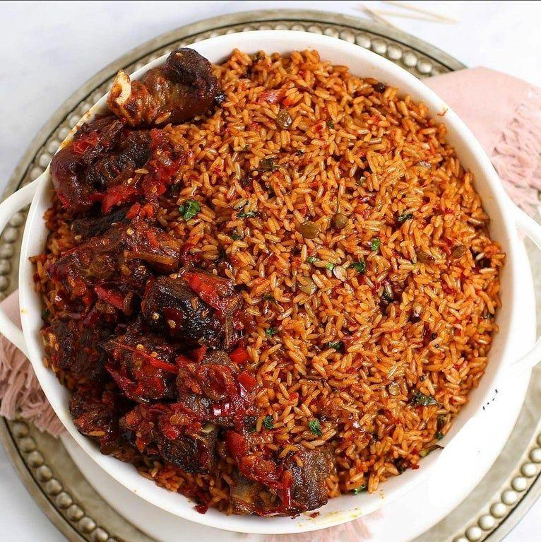

Africa Nigerian Dish
Jollof Rice

Just as rice is a staple in many Asian and Latin American countries, it is in Nigeria, too.
Jollof rice, at its core, is rice cooked with tomato, onion, pepper, and spices.
This ubiquitous dish is present on both special occasions and regular meals.
Not only is this dish popular in Nigeria, but in other African countries as well, such as Ghana.
With its rich flavors, I’/m not surprised why. Other variations include vegetables or a type of meat, such as beef,
fish, or chicken.
Ingredients
- 2 cups (approx. 500 grams)Precooked long grain rice
- 5 Tablespoonful tomato paste(very important)
- 4 whole tomatoes
- 1 red bell pepper (tatashe)
- 2 scotch bonnets peppers/atarodo
- 100ml vegetable oil
- About 600ml Meat or Chicken stock
- A small onion (sliced)
- 1 tablespoonful ground crayfish(optional)
- ½ teaspoon each of Thyme and curry
- 2 small Bay leaves (optional)
- 1 teaspoon salt to taste
- 1 stock cube
- Water, as needed(details in recipe below)
Steps
Now to cook the Nigerian Jollof Rice:
- First, prepare a little stew or sauce .
Do this by blending the fresh tomatoes and peppers together;then dry out excess liquid by boiling in a pot for few
minutes. ..if you already have tomato stew, you can skip this step.
Then, Place a pot on heat, add some oil, add chopped onions, fry a bit and then add the blended tomatoes & pepper
mix, fry for about 10 minutes and then add the tomato pure. Cook until the tomato loses its sour taste and the oil begin to rise to the top.
Tip: The use of the concentrated tomato paste is IMPORTANT if you want to get that
deepvreddish-orange color and taste of the party jollof rice.
- Now Scoop out about a quarter of the stew and set it aside for later use.
- Add the meat or chicken stock to the pot and leave to boil on high heat for 5-10 minutes. Then add the thyme, curry,
stock cubes, salt to taste… and any other seasoning you like, and boil for 5 minutes.
TIP: This is another important step in cooking Nigerian Jollof Rice. If the stock isn’/t hot
enough before adding the precooked(parboiled) Rice, the rice will soak up the cold water, become soggy and even
get burnt before it is done cooking..Eeeww, we don’/t want that right?
- Next, add the parboiled rice and mix thoroughly; the liquid in the pot should be at the same level as the rice in
the pot…you can add more water if the meat or chicken stock isn’/t enough Cover the pot and leave the rice to cook
on low to medium heat. High heat will burn the rice before it is well cooked.If you’/re using bay leaves,
just drop it on the rice before covering the pot.
- When the liquid in the rice is almost dried, add the ground crayfish (this is optional) and the remaining stew to
the top (don’/t touch the rice)…cover the pot and simmer until there is no more liquid in the Rice…Now mix
thoroughly …and your Nigerian Jollof Rice is Ready.
Tip: just 5 minutes before the rice is completly done, you can add a spoonful of butter/margarine
for extra flavor and also garnish with tomato and onion slices before mixing thoroughly.
TIP:
If you are aiming for the party style jollof rice with that smoky flavor that gives the party jollof rice its
distinctive taste, then go a step further and leave the rice to burn ”A LITTLE” at the bottom(don’/t
worry it doesn’/t make you a bad cook)
I actually don’/t like burning food, but that is the sure way to get that ” smoky Party rice taste” if you’/re
not cooking with firewood (but please don’/t make it a habit , except you are using a non-stick pot )
Quick update: Instead of burning your rice(hehehe), you can also add a a few drops of liquid smoke(sold at big
supermarkets), or use smoked spices(e.g smoked paprika, smoked salt) to cook the meal. These ingredients can also
add that smoky flavor to the jollof rice.